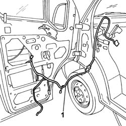

5505A70 FRONT DOOR CABLE LOOM - R.R. OR REPLACE
- Path
- Procedures > 55 ELECTRICAL EQUIPMENT > 5505 INSTRUMENT/GUAGE ELECTRICAL WIRING > 5505A MULTI-FUNCTION COMPONENTS > 5505A70 FRONT DOOR CABLE LOOM - R.R. OR REPLACE
- Kind
- repair procedure (removal / refitting; the operation number is the code)
- Applies to
- all engines; all production periods
- Interactive page
- https://sloeber94.github.io/elrnDB-fDct/en/#/244001335
Applies to: all engines; all production periods
 Removing
Removing
 Refitting
RefittingOp. 7040A20 LEFT DASHBOARD LOWER TRIM - R.R.
Op. 7005C53 INTERIOR OPENING HANDLE - R R
Op. 7005E22 L/H OR R/H FRONT DOOR PANEL RADIO GRILLE (ONE) - R+R
Op. 5570T90 FRONT SPEAKER - R R
Op. 7005E38 FRONT SIDE DOOR INTERIOR HANDLE-R R
Op. 7005E30 OBJECT POUCH ON ONE FRONT SIDE DOOR R R
Op. 7005E08 FRONT SIDE DOOR INTERIOR PANEL R R
Op. 7005A05 FRONT SIDE DOOR WATER GUARD PROTECTION R R OR ARRANGE

Applies to: all engines; all production periods
Refitting
RemovingOp. 7005A05 FRONT SIDE DOOR WATER GUARD PROTECTION R R OR ARRANGE
Op. 7005E08 FRONT SIDE DOOR INTERIOR PANEL R R
Op. 7005E30 OBJECT POUCH ON ONE FRONT SIDE DOOR R R
Op. 7005E38 FRONT SIDE DOOR INTERIOR HANDLE-R R
Op. 5570T90 FRONT SPEAKER - R R
Op. 7005E22 L/H OR R/H FRONT DOOR PANEL RADIO GRILLE (ONE) - R+R
Topics linked from this page (9)
- 5570T90 FRONT SPEAKER - R R
- 7005A05 FRONT SIDE DOOR WATER GUARD PROTECTION R R OR ARRANGE
- 7005C53 INTERIOR OPENING HANDLE - R R
- 7005E08 FRONT SIDE DOOR INTERIOR PANEL R R
- 7005E22 L/H OR R/H FRONT DOOR PANEL RADIO GRILLE (ONE) - R+R
- 7005E30 OBJECT POUCH ON ONE FRONT SIDE DOOR R R
- 7005E38 FRONT SIDE DOOR INTERIOR HANDLE-R R
- 7005M14 SWITCH UNIT CONTROLLING ELECTRIC WINDOWS REAR VIEW MIRRORS AND DOOR LOCK ON DRIVERS SIDE FRONT DOOR R R
- 7040A20 LEFT DASHBOARD LOWER TRIM - R.R.